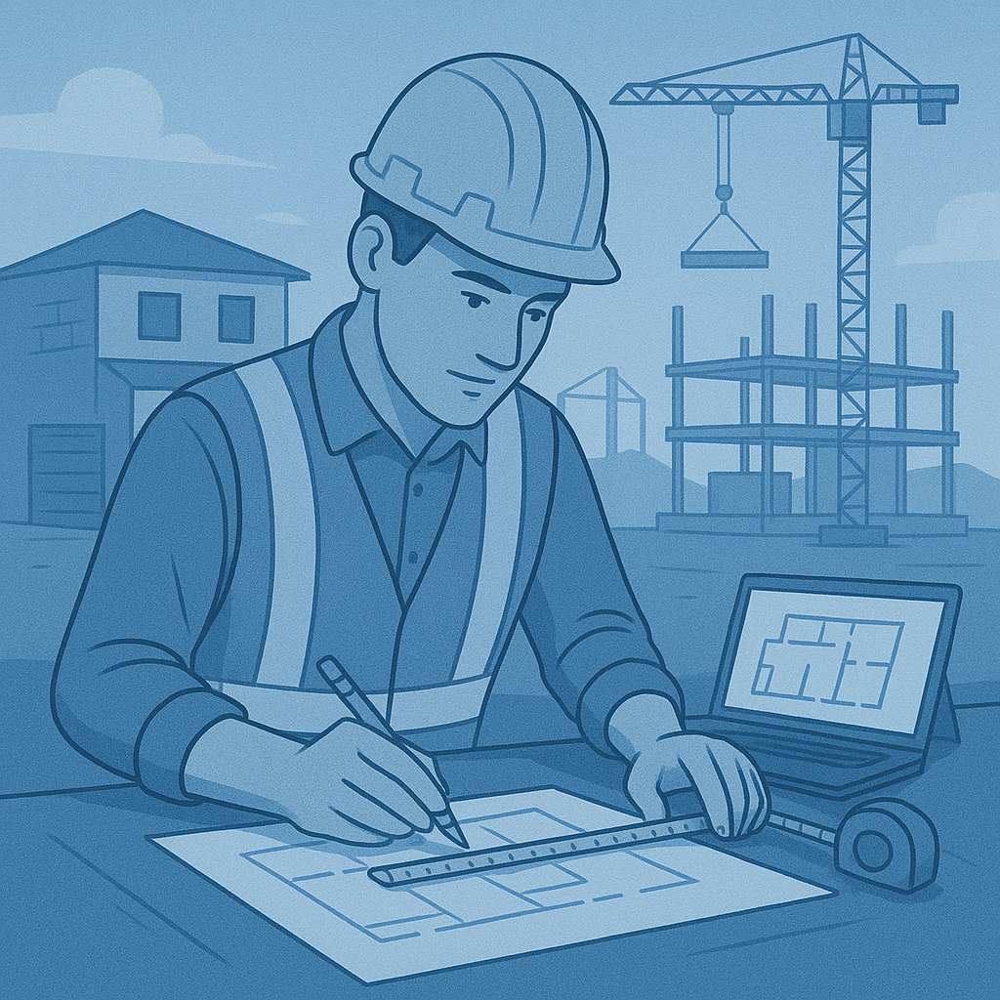
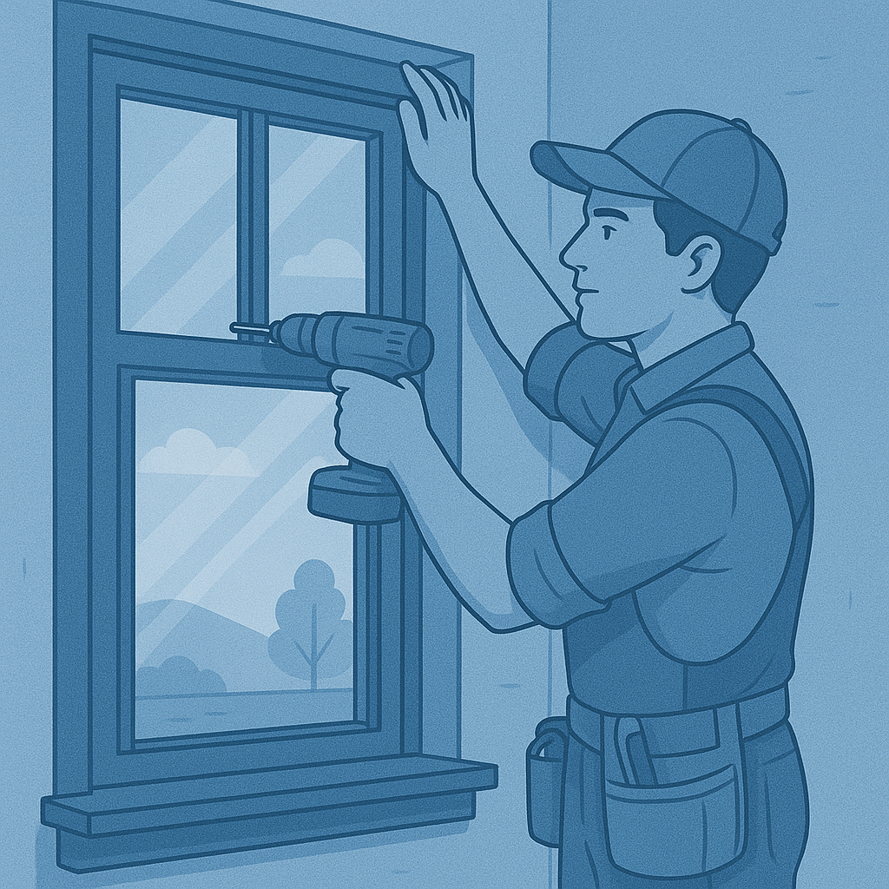

Fundada em 2015, a ArchLine Esquadrias nasceu com o propósito de transformar portas e janelas em soluções modernas, seguras e elegantes para residências e empresas. Desde o início, buscamos unir design contemporâneo com qualidade superior, sempre colocando a satisfação do cliente no centro de cada projeto.
Com o crescimento da confiança em nosso trabalho, em 2020 expandimos nossas operações e inauguramos 3 novas filiais estratégicas, levando nossos produtos e serviços para diferentes regiões.
Hoje, contamos com uma equipe de mais de 80 colaboradores especializados, que atuam com dedicação e conhecimento técnico em cada etapa — do atendimento personalizado à instalação final.
Nosso compromisso é simples: entregar esquadrias que valorizam os espaços, aumentam o conforto e proporcionam segurança, sempre acompanhando as tendências do setor e mantendo a inovação como pilar central.
Na ArchLine Esquadrias, cada linha traçada é uma ponte entre a sua ideia e a realização do seu espaço.
Desenvolvemos esquadrias personalizadas em alumínio, vidro e PVC, adaptadas ao estilo de cada cliente. Desde janelas panorâmicas até portas de correr modernas, entregamos soluções que unem estética e funcionalidade.
Nossa equipe técnica garante uma instalação precisa e segura, além de oferecer planos de manutenção preventiva e corretiva, aumentando a durabilidade e o desempenho das esquadrias.
Auxiliamos arquitetos, engenheiros e clientes finais na escolha de modelos, cores e acabamentos, garantindo que as esquadrias se integrem de forma harmoniosa e sofisticada aos projetos.
Fiquei muito contente com a esquadria, o acabamento tá muito bonito e combina super bem com o restante da casa. A vedação contra vento e barulho é ótima, a gente percebe a diferença logo que fecha a janela. O material parece bem resistente e ao mesmo tempo fácil de limpar, não dá aquele trabalho todo que eu imaginava. Acho que acertei na escolha, recomendo pra quem quer algo bonito e pratico.